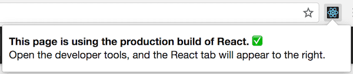
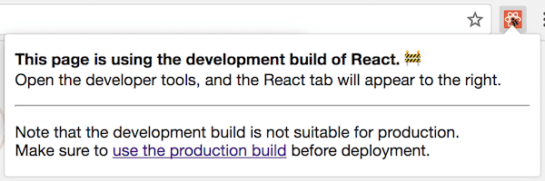
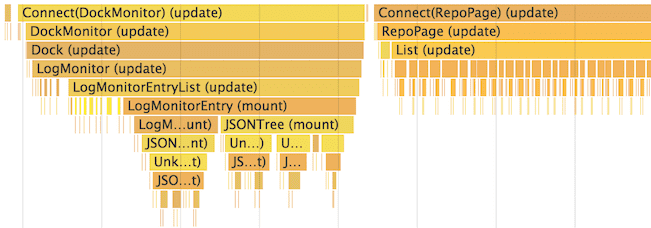
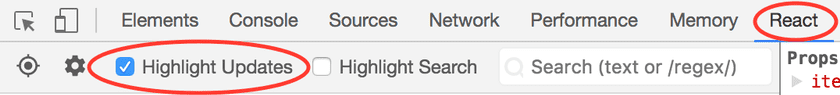

<!DOCTYPE html>
<html>
<head><meta name="generator" content="Hexo 3.8.0">
  <meta charset="utf-8">
  
  <title>React官网之18-性能优化 | LIUXUEWEN&#39;S BLOG</title>
  <meta name="viewport" content="width=device-width, initial-scale=1, maximum-scale=1">
  
    <meta name="keywords" content="LIUXUEWEN,LIUXUEWEN's Blog">
  
  <meta name="description" content="一、前言  更新 UI 时，React 在内部使用几种巧妙的技术来最小化 DOM 操作的数量。对于大多数应用，使用 React 不需要做太多的优化工作就可以快速创建用户界面。除此之外还有一些优化 React 应用性能的办法。 二、使用生产版本  在 React 应用中检测性能问题时，请务必使用压缩过的生产版本。默认情况下，React 包含很多在开发过程中很有帮助的警告。然而这会导致 React 更">
<meta name="keywords" content="前端-react">
<meta property="og:type" content="article">
<meta property="og:title" content="React官网之18-性能优化">
<meta property="og:url" content="http://liuxuewen-site.github.io/2018/07/08/React-gw-18/index.html">
<meta property="og:site_name" content="LIUXUEWEN&#39;S BLOG">
<meta property="og:description" content="一、前言  更新 UI 时，React 在内部使用几种巧妙的技术来最小化 DOM 操作的数量。对于大多数应用，使用 React 不需要做太多的优化工作就可以快速创建用户界面。除此之外还有一些优化 React 应用性能的办法。 二、使用生产版本  在 React 应用中检测性能问题时，请务必使用压缩过的生产版本。默认情况下，React 包含很多在开发过程中很有帮助的警告。然而这会导致 React 更">
<meta property="og:locale" content="default">
<meta property="og:image" content="http://liuxuewen-site.github.io/2018/07/08/React-gw-18/1.png">
<meta property="og:image" content="http://liuxuewen-site.github.io/2018/07/08/React-gw-18/2.png">
<meta property="og:image" content="http://liuxuewen-site.github.io/2018/07/08/React-gw-18/3.png">
<meta property="og:image" content="http://liuxuewen-site.github.io/2018/07/08/React-gw-18/4.png">
<meta property="og:image" content="http://liuxuewen-site.github.io/2018/07/08/React-gw-18/5.gif">
<meta property="og:image" content="http://liuxuewen-site.github.io/2018/07/08/React-gw-18/6.png">
<meta property="og:updated_time" content="2019-01-25T10:18:59.578Z">
<meta name="twitter:card" content="summary">
<meta name="twitter:title" content="React官网之18-性能优化">
<meta name="twitter:description" content="一、前言  更新 UI 时，React 在内部使用几种巧妙的技术来最小化 DOM 操作的数量。对于大多数应用，使用 React 不需要做太多的优化工作就可以快速创建用户界面。除此之外还有一些优化 React 应用性能的办法。 二、使用生产版本  在 React 应用中检测性能问题时，请务必使用压缩过的生产版本。默认情况下，React 包含很多在开发过程中很有帮助的警告。然而这会导致 React 更">
<meta name="twitter:image" content="http://liuxuewen-site.github.io/2018/07/08/React-gw-18/1.png">
  
  
    <link rel="icon" href="/favicon.ico">
  
  <link href="//cdn.bootcss.com/font-awesome/4.7.0/css/font-awesome.min.css" rel="stylesheet" type="text/css">
  <link rel="stylesheet" href="/css/style.css">
  <script src="/js/pace.min.js"></script>
  

  
  

</head>
</html>
<body>
  <div id="container">
      <header id="header">
    <div id="banner"></div>
    <div id="header-outer">
        <div id="header-menu" class="header-menu-pos animated">
            <div class="header-menu-container">
                <a href="/" class="left">
                    <span class="site-title">I AM LIUXUEWEN</span>
                </a>
                <nav id="header-menu-nav" class="right">
                    
                    <a href="/">
                        <i class="fa fa-home"></i>
                        <span>Home</span>
                    </a>
                    
                    <a href="/archives">
                        <i class="fa fa-archive"></i>
                        <span>Archives</span>
                    </a>
                    
                    <a href="/about">
                        <i class="fa fa-user"></i>
                        <span>About</span>
                    </a>
                    
                </nav>
                <a class="mobile-header-menu-button">
                    <i class="fa fa-bars"></i>
                </a>
            </div>
        </div>
        <div id="header-row">
            <div id="logo">
                <a href="/">
                    
                </a>
            </div>
            <div class="header-info">
                <div id="header-title">
                    
                    <h2>
                        I AM LIUXUEWEN
                    </h2>
                    
                </div>
                <div id="header-description">
                    
                    <h3>
                        一个 宅不住 的 IT程序员
                    </h3>
                    
                </div>
            </div>
            <nav class="header-nav">
                <div class="social">
                    
                        <a title="Github" target="_blank" href="//github.com/liuxuewen-site">
                            <i class="fa fa-github fa-2x"></i></a>
                    
                        <a title="Weibo" "="">
                            <i class="fa fa-weibo fa-2x"></i></a>
                    
                        <a title="Weixin" "="">
                            <i class="fa fa-weixin fa-2x"></i></a>
                    
                </div>
            </nav>
        </div>
    </div>
</header>
      <div class="outer">
        <section id="main" class="body-wrap"><article id="post-React-gw-18" class="article article-type-post" itemscope="" itemprop="blogPost">
  <div class="article-inner">
    
      <header class="article-header">
        
  
    <h1 class="post-title" itemprop="name">
      React官网之18-性能优化
    </h1>
    <div class="post-title-bar">
      <ul>
          
              <li>
                  <i class="fa fa-book"></i>
                  
                      <a href="/categories/前端/">前端</a>
                  
              </li>
          
        <li>
          <i class="fa fa-calendar"></i>  2018-07-08
        </li>
        <li>
          <i class="fa fa-eye"></i>
          <span id="busuanzi_value_page_pv"></span>
        </li>
      </ul>
    </div>
  

          
      </header>
    
    <div class="article-entry post-content" itemprop="articleBody">
      
            
            <h3 id="一、前言"><a href="#一、前言" class="headerlink" title="一、前言"></a>一、前言</h3><p>  更新 UI 时，React 在内部使用几种巧妙的技术来最小化 DOM 操作的数量。对于大多数应用，使用 React 不需要做太多的优化工作就可以快速创建用户界面。除此之外还有一些优化 React 应用性能的办法。</p>
<h3 id="二、使用生产版本"><a href="#二、使用生产版本" class="headerlink" title="二、使用生产版本"></a>二、使用生产版本</h3><p>  在 React 应用中检测性能问题时，请务必使用压缩过的生产版本。默认情况下，React 包含很多在开发过程中很有帮助的警告。然而这会导致 React 更大更慢。因此在部署应用时，请确认使用了生产版本。</p>
<p>  如果你不确定构建过程是否正确，可以在 chrome 中安装 <a href="https://chrome.google.com/webstore/detail/react-developer-tools/fmkadmapgofadopljbjfkapdkoienihi" target="_blank" rel="noopener">React开发者工具</a> 。 </p>
<p>  当你访问一个生产模式的 React 页面时，这个工具的图标会有一个黑色的背景：</p>
<p>  </p>
<p>  如果你访问一个开发模式的 React 网站时，这个工具的图标会有一个红色的背景：</p>
<p>  </p>
<p>  最好在开发应用时使用开发模式，部署应用时换为生产模式。以下是构建生产应用的流程：</p>
  <font size="4" face="黑体"><strong>1、Create React App：</strong></font>

<p>  如果你的项目是以 Create React App 创建的，运行：<br>  <figure class="highlight bash"><table><tr><td class="gutter"><pre><span class="line">1</span><br></pre></td><td class="code"><pre><span class="line">npm run build</span><br></pre></td></tr></table></figure></p>
<p>  这将会在该项目的 build/ 文件夹内创建一个生产版本的应用。注意只有发布项目时才有必要这样做，正常开发时使用 npm start 。</p>
  <font size="4" face="黑体"><strong>2、单文件构建：</strong></font>

<p>  我们提供压缩好的生产版本的 React 和 React DOM 文件:<br>  <figure class="highlight bash"><table><tr><td class="gutter"><pre><span class="line">1</span><br><span class="line">2</span><br></pre></td><td class="code"><pre><span class="line">&lt;script src=<span class="string">"https://unpkg.com/react@15/dist/react.min.js"</span>&gt;&lt;/script&gt;</span><br><span class="line">&lt;script src=<span class="string">"https://unpkg.com/react-dom@15/dist/react-dom.min.js"</span>&gt;&lt;/script&gt;</span><br></pre></td></tr></table></figure></p>
<p>  注意只有结尾为 .min.js 的 React 文件才是适合生产使用的。</p>
  <font size="4" face="黑体"><strong>3、Brunch：</strong></font>

<p>  为了创建最高效的 Brunch 生产版本，需要安装 uglify-js-brunch 插件：<br>  <figure class="highlight bash"><table><tr><td class="gutter"><pre><span class="line">1</span><br><span class="line">2</span><br><span class="line">3</span><br><span class="line">4</span><br><span class="line">5</span><br></pre></td><td class="code"><pre><span class="line"><span class="comment"># 如果使用 npm</span></span><br><span class="line">npm install --save-dev uglify-js-brunch</span><br><span class="line"></span><br><span class="line"><span class="comment"># 如果使用 Yarn</span></span><br><span class="line">yarn add --dev uglify-js-brunch</span><br></pre></td></tr></table></figure></p>
<p>  然后，为了构建生产版本，在 build 命令后添加 -p 参数：<br>  <figure class="highlight bash"><table><tr><td class="gutter"><pre><span class="line">1</span><br></pre></td><td class="code"><pre><span class="line">brunch build -p</span><br></pre></td></tr></table></figure></p>
<p>  注意只有生产版本需要这样操作。不要在开发环境中安装这个插件或者使用 -p 参数，因为它会隐藏掉有用的 React 警告并使构建过程更慢。</p>
  <font size="4" face="黑体"><strong>4、Browserify：</strong></font>

<p>  为了创建最高效的 Browserify 生产版本，需要安装一些插件：<br>  <figure class="highlight bash"><table><tr><td class="gutter"><pre><span class="line">1</span><br><span class="line">2</span><br><span class="line">3</span><br><span class="line">4</span><br><span class="line">5</span><br></pre></td><td class="code"><pre><span class="line"><span class="comment"># 如果使用 npm</span></span><br><span class="line">npm install --save-dev bundle-collapser envify uglify-js uglifyify </span><br><span class="line"></span><br><span class="line"><span class="comment"># 如果使用 Yarn</span></span><br><span class="line">yarn add --dev bundle-collapser envify uglify-js uglifyify</span><br></pre></td></tr></table></figure></p>
<p>  为了构建生产版本，务必添加这些设置指令 (参数很重要)：<br>  1）envify 该插件确保正确的编译环境，全局安装（-g）。<br>  2）uglifyify 该插件移除了开发接口。全局安装（-g）。<br>  3）bundle-collapser 该插件用数字替代了长长的模块ID。<br>  4）最后，以上结果都被输添加至 uglify-js 来得到整合。( [了解原因]<a href="https://github.com/hughsk/uglifyify#motivationusage" target="_blank" rel="noopener">https://github.com/hughsk/uglifyify#motivationusage</a>) )。</p>
<p>  举个例子：<br>  <figure class="highlight bash"><table><tr><td class="gutter"><pre><span class="line">1</span><br><span class="line">2</span><br><span class="line">3</span><br><span class="line">4</span><br><span class="line">5</span><br></pre></td><td class="code"><pre><span class="line">browserify ./index.js \</span><br><span class="line">  -g [ envify --NODE_ENV production ] \</span><br><span class="line">  -g uglifyify \</span><br><span class="line">  -p bundle-collapser/plugin \</span><br><span class="line">  | uglifyjs --compress --mangle &gt; ./bundle.js</span><br></pre></td></tr></table></figure></p>
<p>  注意：包的名称是 uglify-js，但是它提供的文件叫 uglifyjs。这不是一个错字。只有生产版本需要这样操作。不要在开发环境中安装这些插件，因为它们会隐藏掉有用的 React 警告并使构建过程更慢。</p>
  <font size="4" face="黑体"><strong>5、Rollup：</strong></font>

<p>  为了创建最高效的 Rollup 生产版本，需要安装一些插件：<br>  <figure class="highlight bash"><table><tr><td class="gutter"><pre><span class="line">1</span><br><span class="line">2</span><br><span class="line">3</span><br><span class="line">4</span><br><span class="line">5</span><br></pre></td><td class="code"><pre><span class="line"><span class="comment"># 如果使用 npm</span></span><br><span class="line">npm install --save-dev rollup-plugin-commonjs rollup-plugin-replace rollup-plugin-uglify </span><br><span class="line"></span><br><span class="line"><span class="comment"># 如果使用 Yarn</span></span><br><span class="line">yarn add --dev rollup-plugin-commonjs rollup-plugin-replace rollup-plugin-uglify</span><br></pre></td></tr></table></figure></p>
<p>  为了构建生产版本，务必添加这些插件 (参数很重要):<br>  1）replace 该插件确保正确的编译环境。<br>  2）commonjs 该插件在 Rollup 内提供对 CommonJS 的支持。<br>  3）uglify 该插件压缩生成最终版本。</p>
<p>  举个例子：<br>  <figure class="highlight bash"><table><tr><td class="gutter"><pre><span class="line">1</span><br><span class="line">2</span><br><span class="line">3</span><br><span class="line">4</span><br><span class="line">5</span><br><span class="line">6</span><br><span class="line">7</span><br><span class="line">8</span><br><span class="line">9</span><br></pre></td><td class="code"><pre><span class="line">plugins: [</span><br><span class="line">  // ...</span><br><span class="line">  require(<span class="string">'rollup-plugin-replace'</span>)(&#123;</span><br><span class="line">    <span class="string">'process.env.NODE_ENV'</span>: JSON.stringify(<span class="string">'production'</span>)</span><br><span class="line">  &#125;),</span><br><span class="line">  require(<span class="string">'rollup-plugin-commonjs'</span>)(),</span><br><span class="line">  require(<span class="string">'rollup-plugin-uglify'</span>)(),</span><br><span class="line">  // ...</span><br><span class="line">]</span><br></pre></td></tr></table></figure></p>
<p>  一个完整的安装例子 查看这个 <a href="https://gist.github.com/Rich-Harris/cb14f4bc0670c47d00d191565be36bf0" target="_blank" rel="noopener">gist</a>。</p>
<p>  注意只有生产版本需要这样操作。你不应该在开发环境中应用 uglify 插件 和 replace 插件的 ‘production’ 值，因为它们会隐藏掉有用的 React 警告并使构建过程更慢。</p>
  <font size="4" face="黑体"><strong>6、webpack：</strong></font>

<p>  注意：如果你正在使用 Create React App 方式，参考上述文档。这里只适用于直接配置Webpack的情况。</p>
<p>  为了创建最高效的Webpack生产版本，需要在生产版本的配置中添加这些插件：<br>  <figure class="highlight bash"><table><tr><td class="gutter"><pre><span class="line">1</span><br><span class="line">2</span><br><span class="line">3</span><br><span class="line">4</span><br><span class="line">5</span><br><span class="line">6</span><br></pre></td><td class="code"><pre><span class="line">new webpack.DefinePlugin(&#123;</span><br><span class="line">  <span class="string">'process.env'</span>: &#123;</span><br><span class="line">    NODE_ENV: JSON.stringify(<span class="string">'production'</span>)</span><br><span class="line">  &#125;</span><br><span class="line">&#125;),</span><br><span class="line">new webpack.optimize.UglifyJsPlugin()</span><br></pre></td></tr></table></figure></p>
<p>  了解更多参见 <a href="https://webpack.js.org/guides/production/" target="_blank" rel="noopener">Webpack文档</a> 。</p>
<p>  注意只有生产版本需要这样操作。你不应该在开发环境中应用 UglifyJsPlugin 插件 和 DefinePlugin 插件的 ‘production’ 值，因为它们会隐藏掉有用的 React 警告并使构建过程更慢。</p>
<h3 id="三、使用Chrome性能分析工具分析组件性能"><a href="#三、使用Chrome性能分析工具分析组件性能" class="headerlink" title="三、使用Chrome性能分析工具分析组件性能"></a>三、使用Chrome性能分析工具分析组件性能</h3><p>  在开发模式下，在支持的浏览器内使用性能工具可以直观的了解组件何时 装载(mount)，更新(update) 和 卸载(unmount)。例如：</p>
<p>  </p>
<p>  在 Chrome 中操作如下:</p>
<p>  1）通过添加 ?react_perf 查询字段加载你的应用(例如：<a href="http://localhost:3000/?react_perf)。" target="_blank" rel="noopener">http://localhost:3000/?react_perf)。</a></p>
<p>  2）打开 Chrome DevTools Performance 并点击 Record 。</p>
<p>  3）执行你想要分析的操作，不要超过20秒，否则 Chrome 可能会挂起。</p>
<p>  4）停止记录。</p>
<p>  5）在 User Timing 标签下，React事件将会分组列出。</p>
<p>  有关更详细的演练，请查看 [Ben Schwarz]<a href="https://building.calibreapp.com/debugging-react-performance-with-react-16-and-chrome-devtools-c90698a522ad" target="_blank" rel="noopener">https://building.calibreapp.com/debugging-react-performance-with-react-16-and-chrome-devtools-c90698a522ad</a>) 的这篇文章.</p>
<p>  注意，上述数字是相对的，组件会在生产环境中会更快。然而这对你分析由于错误导致不相关的组件的更新、分析组件更新的深度和频率很有帮助。目前 Chrome ，Edge 和 IE 支持该特性，但是我们使用了标准的 User Timing API ,因此我们期待将来会有更多的浏览器支持。</p>
<h3 id="四、避免重新渲染"><a href="#四、避免重新渲染" class="headerlink" title="四、避免重新渲染"></a>四、避免重新渲染</h3><p>  React 构建并维护渲染 UI 的内部表示，它包括你从组件中返回的 React 元素。这些内部状态使得 React 只有在必要的情况下才会创建 DOM 节点和访问存在的 DOM 节点，因为对 JavaScript 对象的操作是比 DOM 操作更快。这被称为虚拟 DOM，React Native 也是基于上述原理。</p>
<p>  当组件的 props 和 state 改变时，React 通过比较新返回的元素和之前渲染的元素来决定是否有必要更新 DOM 元素。当二者不相等时则更新 DOM 元素。</p>
<p>  现在你可以使用 React DevTools 可视化这些重新渲染的虚拟DOM：<br>  1）<a href="https://chrome.google.com/webstore/detail/react-developer-tools/fmkadmapgofadopljbjfkapdkoienihi?hl=en" target="_blank" rel="noopener">Chrome Browser Extension</a><br>  2）<a href="https://addons.mozilla.org/en-GB/firefox/addon/react-devtools/" target="_blank" rel="noopener">Firefox Browser Extension</a><br>  3）[Standalone Node Package]<a href="https://www.npmjs.com/package/react-devtools" target="_blank" rel="noopener">https://www.npmjs.com/package/react-devtools</a>)</p>
<p>  在开发者工具的控制台中，选择 React 选项卡中的 Highlight Updates (高亮显示更新) 选项：</p>
<p>  </p>
<p>  与你的页面进行交互，你应该会看到，所有重新渲染的组件周围都会出现高亮显示的边框。反过来，这可以让你知道没有必要重新渲染的组件。 你可以查看 Ben Edelstein 的 <a href="https://blog.logrocket.com/make-react-fast-again-part-3-highlighting-component-updates-6119e45e6833" target="_blank" rel="noopener">博客文章</a>  了解更多关于 React DevTools 功能的信息。考虑下面这个例子：</p>
<p>  </p>
<p>  注意，当我们进入第二个待办事项时，每次输入时，第一个待办事项也会在屏幕上闪烁。这意味着它正在被重新渲染。这有时被称为浪费的渲染。我们知道这是没有必要的，因为第一个待办事项的内容没有改变，但是 React 并不知道这一点。</p>
<p>  即使 React 只更新更改的 DOM 节点，重新渲染仍然需要一些时间。在许多情况下，这不是大问题，但是降低交互性能是显而易见的，你可以通过重写生命周期函数 shouldComponentUpdate 来优化性能，这是在重新渲染过程开始之前触发的。该函数的默认实现中返回的是 true，使得 React 执行更新操作：<br>  <figure class="highlight bash"><table><tr><td class="gutter"><pre><span class="line">1</span><br><span class="line">2</span><br><span class="line">3</span><br></pre></td><td class="code"><pre><span class="line">shouldComponentUpdate(nextProps, nextState) &#123;</span><br><span class="line">  <span class="built_in">return</span> <span class="literal">true</span>;</span><br><span class="line">&#125;</span><br></pre></td></tr></table></figure></p>
<p>  如果你知道在某些情况下你的组件不需要更新，那么你可以在 shouldComponentUpdate 返回 false 来跳过整个渲染过程，包括在这个组件和后面调用的 render() 。</p>
<p>  在大多数情况下，可以不用手写 shouldComponentUpdate()，而是从 React.PureComponent 继承。这相当于用当前和以前 props(属性) 和 state(状态) 的浅层比较来实现 shouldComponentUpdate()。</p>
<h3 id="五、应用-shouldComponentUpdate"><a href="#五、应用-shouldComponentUpdate" class="headerlink" title="五、应用 shouldComponentUpdate"></a>五、应用 shouldComponentUpdate</h3><p>  下面有一个组件子树，其中 SCU 代表 shouldComponentUpdate 函数返回结果。vDOMEq 代表渲染的 React 元素是否相等。最后，圆圈内的颜色代表组件是否需要更新。</p>
<p>  </p>
<p>  因为以 C2 为根节点的子树 shouldComponentUpdate 返回的是 false，React不会尝试重新渲染 C2，并且也不会尝试调用 C4 和 C5 的 shouldComponentUpdate。</p>
<p>  对于 C1 和 C3，shouldComponentUpdate 返回 true，所以 React 需要向下遍历。对于 C6，shouldComponentUpdate 返回 true，并且需要渲染的元素不相同，因此 React 需要更新 DOM 节点。</p>
<p>  最后一个值得注意的例子是 C8。React 必须渲染这个组件，但是由于返回的 React 元素与之前渲染的元素相比是相同的，因此不需要更新 DOM 节点。</p>
<p>  注意，React仅仅需要修改 C6 的 DOM，这是必须的。对于 C8 来讲，通过比较渲染元素被剔除，对于 C2 子树和 C7，因为shouldComponentUpdate 被剔除，甚至都不需要比较 React 元素，也不会调用 render 方法。</p>
<h3 id="六、例子"><a href="#六、例子" class="headerlink" title="六、例子"></a>六、例子</h3><p>  如果你想要你的组件仅当 props.color 或 state.count 发生改变时需要更新，你可以通过 shouldComponentUpdate 函数来检查：<br>  <figure class="highlight bash"><table><tr><td class="gutter"><pre><span class="line">1</span><br><span class="line">2</span><br><span class="line">3</span><br><span class="line">4</span><br><span class="line">5</span><br><span class="line">6</span><br><span class="line">7</span><br><span class="line">8</span><br><span class="line">9</span><br><span class="line">10</span><br><span class="line">11</span><br><span class="line">12</span><br><span class="line">13</span><br><span class="line">14</span><br><span class="line">15</span><br><span class="line">16</span><br><span class="line">17</span><br><span class="line">18</span><br><span class="line">19</span><br><span class="line">20</span><br><span class="line">21</span><br><span class="line">22</span><br><span class="line">23</span><br><span class="line">24</span><br><span class="line">25</span><br><span class="line">26</span><br></pre></td><td class="code"><pre><span class="line">class CounterButton extends React.Component &#123;</span><br><span class="line">  constructor(props) &#123;</span><br><span class="line">    super(props);</span><br><span class="line">    this.state = &#123;count: 1&#125;;</span><br><span class="line">  &#125;</span><br><span class="line"></span><br><span class="line">  shouldComponentUpdate(nextProps, nextState) &#123;</span><br><span class="line">    <span class="keyword">if</span> (this.props.color !== nextProps.color) &#123;</span><br><span class="line">      <span class="built_in">return</span> <span class="literal">true</span>;</span><br><span class="line">    &#125;</span><br><span class="line">    <span class="keyword">if</span> (this.state.count !== nextState.count) &#123;</span><br><span class="line">      <span class="built_in">return</span> <span class="literal">true</span>;</span><br><span class="line">    &#125;</span><br><span class="line">    <span class="built_in">return</span> <span class="literal">false</span>;</span><br><span class="line">  &#125;</span><br><span class="line"></span><br><span class="line">  <span class="function"><span class="title">render</span></span>() &#123;</span><br><span class="line">    <span class="built_in">return</span> (</span><br><span class="line">      &lt;button</span><br><span class="line">        color=&#123;this.props.color&#125;</span><br><span class="line">        onClick=&#123;() =&gt; this.setState(state =&gt; (&#123;count: state.count + 1&#125;))&#125;&gt;</span><br><span class="line">        Count: &#123;this.state.count&#125;</span><br><span class="line">      &lt;/button&gt;</span><br><span class="line">    );</span><br><span class="line">  &#125;</span><br><span class="line">&#125;</span><br></pre></td></tr></table></figure></p>
<p>  在以上代码中，shouldComponentUpdate 函数仅仅检查 props.color 或者 state.count 是否发生改变。如果这些值没有发生变化，则组件不会进行更新。如果你的组件更复杂，你可以使用类似于对 props 和 state 的所有属性进行浅比较这种模式来决定组件是否需要更新。这种模式非常普遍，因此 React 提供了一个辅助对象实现上面的逻辑：继承 React.PureComponent。因此，下面的代码是一种更简单的方式实现了相同的功能：<br>  <figure class="highlight bash"><table><tr><td class="gutter"><pre><span class="line">1</span><br><span class="line">2</span><br><span class="line">3</span><br><span class="line">4</span><br><span class="line">5</span><br><span class="line">6</span><br><span class="line">7</span><br><span class="line">8</span><br><span class="line">9</span><br><span class="line">10</span><br><span class="line">11</span><br><span class="line">12</span><br><span class="line">13</span><br><span class="line">14</span><br><span class="line">15</span><br><span class="line">16</span><br></pre></td><td class="code"><pre><span class="line">class CounterButton extends React.PureComponent &#123;</span><br><span class="line">  constructor(props) &#123;</span><br><span class="line">    super(props);</span><br><span class="line">    this.state = &#123;count: 1&#125;;</span><br><span class="line">  &#125;</span><br><span class="line"></span><br><span class="line">  <span class="function"><span class="title">render</span></span>() &#123;</span><br><span class="line">    <span class="built_in">return</span> (</span><br><span class="line">      &lt;button</span><br><span class="line">        color=&#123;this.props.color&#125;</span><br><span class="line">        onClick=&#123;() =&gt; this.setState(state =&gt; (&#123;count: state.count + 1&#125;))&#125;&gt;</span><br><span class="line">        Count: &#123;this.state.count&#125;</span><br><span class="line">      &lt;/button&gt;</span><br><span class="line">    );</span><br><span class="line">  &#125;</span><br><span class="line">&#125;</span><br></pre></td></tr></table></figure></p>
<p>  大多数情况下，你可以使用 React.PureComponent 而不是自己编写 shouldComponentUpdate。但 React.PureComponent 仅会进项浅比较，因此如果 props 或者 state 可能会导致浅比较失败的情况下就不能使用 React.PureComponent。</p>
<p>  如果 props 和 state 属性存在更复杂的数据结构，这可能是一个问题。例如，我们编写一个 ListOfWords 组件展现一个以逗号分隔的单词列表，在父组件 WordAdder，当你点击一个按钮时会给列表添加一个单词。下面的代码是不能正确地工作：<br>  <figure class="highlight bash"><table><tr><td class="gutter"><pre><span class="line">1</span><br><span class="line">2</span><br><span class="line">3</span><br><span class="line">4</span><br><span class="line">5</span><br><span class="line">6</span><br><span class="line">7</span><br><span class="line">8</span><br><span class="line">9</span><br><span class="line">10</span><br><span class="line">11</span><br><span class="line">12</span><br><span class="line">13</span><br><span class="line">14</span><br><span class="line">15</span><br><span class="line">16</span><br><span class="line">17</span><br><span class="line">18</span><br><span class="line">19</span><br><span class="line">20</span><br><span class="line">21</span><br><span class="line">22</span><br><span class="line">23</span><br><span class="line">24</span><br><span class="line">25</span><br><span class="line">26</span><br><span class="line">27</span><br><span class="line">28</span><br><span class="line">29</span><br><span class="line">30</span><br><span class="line">31</span><br></pre></td><td class="code"><pre><span class="line">class ListOfWords extends React.PureComponent &#123;</span><br><span class="line">  <span class="function"><span class="title">render</span></span>() &#123;</span><br><span class="line">    <span class="built_in">return</span> &lt;div&gt;&#123;this.props.words.join(<span class="string">','</span>)&#125;&lt;/div&gt;;</span><br><span class="line">  &#125;</span><br><span class="line">&#125;</span><br><span class="line"></span><br><span class="line">class WordAdder extends React.Component &#123;</span><br><span class="line">  constructor(props) &#123;</span><br><span class="line">    super(props);</span><br><span class="line">    this.state = &#123;</span><br><span class="line">      words: [<span class="string">'marklar'</span>]</span><br><span class="line">    &#125;;</span><br><span class="line">    this.handleClick = this.handleClick.bind(this);</span><br><span class="line">  &#125;</span><br><span class="line"></span><br><span class="line">  <span class="function"><span class="title">handleClick</span></span>() &#123;</span><br><span class="line">    // 这个部分是不好的风格，造成一个错误</span><br><span class="line">    const words = this.state.words;</span><br><span class="line">    words.push(<span class="string">'marklar'</span>);</span><br><span class="line">    this.setState(&#123;words: words&#125;);</span><br><span class="line">  &#125;</span><br><span class="line"></span><br><span class="line">  <span class="function"><span class="title">render</span></span>() &#123;</span><br><span class="line">    <span class="built_in">return</span> (</span><br><span class="line">      &lt;div&gt;</span><br><span class="line">        &lt;button onClick=&#123;this.handleClick&#125; /&gt;</span><br><span class="line">        &lt;ListOfWords words=&#123;this.state.words&#125; /&gt;</span><br><span class="line">      &lt;/div&gt;</span><br><span class="line">    );</span><br><span class="line">  &#125;</span><br><span class="line">&#125;</span><br></pre></td></tr></table></figure></p>
<p>  问题是 PureComponent 只进行在旧的 this.props.words 与新的 this.props.words 之间进行前比较。因此在 WordAdder 组件中 handleClick 的代码会突变 words 数组。虽然数组中实际的值发生了变化，但旧的 this.props.words 和新的 this.props.words 值是相同的，即使 ListOfWords 需要渲染新的值，但是还是不会进行更新。</p>
<h3 id="七、不可变数据的力量"><a href="#七、不可变数据的力量" class="headerlink" title="七、不可变数据的力量"></a>七、不可变数据的力量</h3><p>  避免这类问题最简单的方法是不要突变(mutate) props 或 state 的值。例如，上述 handleClick 方法可以通过使用 concat 重写:<br>  <figure class="highlight bash"><table><tr><td class="gutter"><pre><span class="line">1</span><br><span class="line">2</span><br><span class="line">3</span><br><span class="line">4</span><br><span class="line">5</span><br></pre></td><td class="code"><pre><span class="line"><span class="function"><span class="title">handleClick</span></span>() &#123;</span><br><span class="line">  this.setState(prevState =&gt; (&#123;</span><br><span class="line">    words: prevState.words.concat([<span class="string">'marklar'</span>])</span><br><span class="line">  &#125;));</span><br><span class="line">&#125;</span><br></pre></td></tr></table></figure></p>
<p>  ES6 对于数组支持展开语法，使得解决上述问题更加简单。如果你使用的是 Create React App，默认支持该语法:<br>  <figure class="highlight bash"><table><tr><td class="gutter"><pre><span class="line">1</span><br><span class="line">2</span><br><span class="line">3</span><br><span class="line">4</span><br><span class="line">5</span><br></pre></td><td class="code"><pre><span class="line"><span class="function"><span class="title">handleClick</span></span>() &#123;</span><br><span class="line">  this.setState(prevState =&gt; (&#123;</span><br><span class="line">    words: [...prevState.words, <span class="string">'marklar'</span>],</span><br><span class="line">  &#125;));</span><br><span class="line">&#125;;</span><br></pre></td></tr></table></figure></p>
<p>  你可以以一种简单的方式重写上述代码，使得改变对象的同时不会突变对象，例如，如果有一个 colormap 的对象并且编写一个函数将 colormap.right 的值改为 blue：<br>  <figure class="highlight bash"><table><tr><td class="gutter"><pre><span class="line">1</span><br><span class="line">2</span><br><span class="line">3</span><br></pre></td><td class="code"><pre><span class="line"><span class="keyword">function</span> updateColorMap(colormap) &#123;</span><br><span class="line">  colormap.right = <span class="string">'blue'</span>;</span><br><span class="line">&#125;</span><br></pre></td></tr></table></figure></p>
<p>  在不突变原来的对象的条件下实现上面的要求，我们可以使用 Object.assign 方法，updateColorMap 现在返回一个新的对象，而不是修改原来的对象。Object.assign 属于ES6语法，需要 polyfill：<br>  <figure class="highlight bash"><table><tr><td class="gutter"><pre><span class="line">1</span><br><span class="line">2</span><br><span class="line">3</span><br></pre></td><td class="code"><pre><span class="line"><span class="keyword">function</span> updateColorMap(colormap) &#123;</span><br><span class="line">  <span class="built_in">return</span> Object.assign(&#123;&#125;, colormap, &#123;right: <span class="string">'blue'</span>&#125;);</span><br><span class="line">&#125;</span><br></pre></td></tr></table></figure></p>
<p>  JavaScript提案添加了对象展开符，能够更简单地更新对象而不突变对象:<br>  <figure class="highlight bash"><table><tr><td class="gutter"><pre><span class="line">1</span><br><span class="line">2</span><br><span class="line">3</span><br></pre></td><td class="code"><pre><span class="line"><span class="keyword">function</span> updateColorMap(colormap) &#123;</span><br><span class="line">  <span class="built_in">return</span> &#123;...colormap, right: <span class="string">'blue'</span>&#125;;</span><br><span class="line">&#125;</span><br></pre></td></tr></table></figure></p>
<p>  如果你使用的是 Create React App ，Object.assign 和对象展开符默认都是可用的。</p>
<h3 id="八、使用不可突变的数据结构"><a href="#八、使用不可突变的数据结构" class="headerlink" title="八、使用不可突变的数据结构"></a>八、使用不可突变的数据结构</h3><p>  Immutable.js 是解决上述问题的另外一个方法，其提供了通过结构共享实现(Structural Sharing)的、不可变的(Immutable)、持久的(Persistent)集合:</p>
<p>  1）不可变(Immutable): 一个集合一旦创建，在其他时间是不可更改的。<br>  2）持久的(Persistent): 新的集合可以基于之前的结合创建并产生突变，例如：set。原来的集合在新集合创建之后仍然是可用的。<br>  3）结构共享(Structural Sharing): 新的集合尽可能通过之前集合相同的结构创建，最小程度地减少复制操作来提高性能。</p>
<p>  不可变性使得追踪改变非常容易。改变会产生新的对象，因此我们仅需要检查对象的引用是否改变。例如，下面是普通的JavaScript代码：<br>  <figure class="highlight bash"><table><tr><td class="gutter"><pre><span class="line">1</span><br><span class="line">2</span><br><span class="line">3</span><br><span class="line">4</span><br><span class="line">5</span><br><span class="line">6</span><br></pre></td><td class="code"><pre><span class="line">const x = &#123; foo: <span class="string">'bar'</span> &#125;;</span><br><span class="line">const y = x;</span><br><span class="line">y.foo = <span class="string">'baz'</span>;</span><br><span class="line">x === y; // <span class="literal">true</span></span><br><span class="line"></span><br><span class="line">虽然 y 被编辑了，但是因为引用的是相同的对象 x ,所以比较返回 <span class="literal">true</span> 。</span><br></pre></td></tr></table></figure></p>
<p>  你可以用 immutable.js 编写类似的代码：<br>  <figure class="highlight bash"><table><tr><td class="gutter"><pre><span class="line">1</span><br><span class="line">2</span><br><span class="line">3</span><br><span class="line">4</span><br><span class="line">5</span><br><span class="line">6</span><br></pre></td><td class="code"><pre><span class="line">const SomeRecord = Immutable.Record(&#123; foo: null &#125;);</span><br><span class="line">const x = new SomeRecord(&#123; foo: <span class="string">'bar'</span> &#125;);</span><br><span class="line">const y = x.set(<span class="string">'foo'</span>, <span class="string">'baz'</span>);</span><br><span class="line">const z = x.set(<span class="string">'foo'</span>, <span class="string">'bar'</span>);</span><br><span class="line">x === y; // <span class="literal">false</span></span><br><span class="line">x === z; // <span class="literal">true</span></span><br></pre></td></tr></table></figure></p>
<p>  在这种情况下，因为当改变 x 时返回新的引用，我们可以使用一个相等检查(x===y)来验证存储在y中的新值是否与存储在x中的原始值不同。</p>
<p>  其他两个可以帮助我们使用不可变数据的库分别是:seamless-immutable 和 immutability-helper。</p>
<p>  不可变数据提供了一种更简单的方式来追踪对象的改变，这正是我们实现 shouldComponentUpdate 所需要的。这将会提供可观的性能提升。</p>
<p>标注：</p>
<ul>
<li>参考资料1：<a href="https://reactjs.org/" target="_blank" rel="noopener">https://reactjs.org/</a></li>
<li>参考资料2：<a href="https://doc.react-china.org/" target="_blank" rel="noopener">https://doc.react-china.org/</a></li>
</ul>

            <div class="post-copyright">
    <div class="content">
        <p>最后更新： 2019年01月25日 18:18</p>
        <p>原始链接： <a class="post-url" href="/2018/07/08/React-gw-18/" title="React官网之18-性能优化">http://liuxuewen-site.github.io/2018/07/08/React-gw-18/</a></p>
        <footer>
            <a href="http://liuxuewen-site.github.io">
                
                liuxuewen
            </a>
        </footer>
    </div>
</div>

      
        
            
<div class="page-reward">
    <a id="rewardBtn" href="javascript:;">赏</a>
</div>

<div id="reward" class="post-modal reward-lay">
    <a class="close" href="javascript:;" id="reward-close">×</a>
    <span class="reward-title">
        <i class="icon icon-quote-left"></i>
        请我吃糖~
        <i class="icon icon-quote-right"></i>
    </span>
    <div class="reward-content">
        
        <div class="reward-code">
            
        </div>
        <div class="reward-select">
            
            <label class="reward-select-item checked" data-id="wechat" data-wechat="/images/wechat_code.jpg">
                
            </label>
            
            
            <label class="reward-select-item" data-id="alipay" data-alipay="/images/alipay_code.jpg">
                
            </label>
            
        </div>
    </div>
</div>


        
    </div>
    <footer class="article-footer">
        
        
<div class="post-share">
    <a href="javascript:;" id="share-sub" class="post-share-fab">
        <i class="fa fa-share-alt"></i>
    </a>
    <div class="post-share-list" id="share-list">
        <ul class="share-icons">
          <li>
            <a class="weibo share-sns" target="_blank" href="http://service.weibo.com/share/share.php?url=http://liuxuewen-site.github.io/2018/07/08/React-gw-18/&title=《React官网之18-性能优化》 — LIUXUEWEN'S BLOG&pic=http://liuxuewen-site.github.ioimages/logo.png" data-title="微博">
              <i class="fa fa-weibo"></i>
            </a>
          </li>
          <li>
            <a class="weixin share-sns" id="wxFab" href="javascript:;" data-title="微信">
              <i class="fa fa-weixin"></i>
            </a>
          </li>
          <li>
            <a class="qq share-sns" target="_blank" href="http://connect.qq.com/widget/shareqq/index.html?url=http://liuxuewen-site.github.io/2018/07/08/React-gw-18/&title=《React官网之18-性能优化》 — LIUXUEWEN'S BLOG&source=" data-title="QQ">
              <i class="fa fa-qq"></i>
            </a>
          </li>
          <li>
            <a class="facebook share-sns" target="_blank" href="https://www.facebook.com/sharer/sharer.php?u=http://liuxuewen-site.github.io/2018/07/08/React-gw-18/" data-title="Facebook">
              <i class="fa fa-facebook"></i>
            </a>
          </li>
          <li>
            <a class="twitter share-sns" target="_blank" href="https://twitter.com/intent/tweet?text=《React官网之18-性能优化》 — LIUXUEWEN'S BLOG&url=http://liuxuewen-site.github.io/2018/07/08/React-gw-18/&via=http://liuxuewen-site.github.io" data-title="Twitter">
              <i class="fa fa-twitter"></i>
            </a>
          </li>
          <li>
            <a class="google share-sns" target="_blank" href="https://plus.google.com/share?url=http://liuxuewen-site.github.io/2018/07/08/React-gw-18/" data-title="Google+">
              <i class="fa fa-google-plus"></i>
            </a>
          </li>
        </ul>
     </div>
</div>
<div class="post-modal wx-share" id="wxShare">
    <a class="close" href="javascript:;" id="wxShare-close">×</a>
    <p>扫一扫，分享到微信</p>
    
</div>

<div class="mask"></div>

        
        <ul class="article-footer-menu">
            
            
  <li class="article-footer-tags">
    <i class="fa fa-tags"></i>
      
    <a href="/tags/前端-react/" class="color4">前端-react</a>
      
  </li>

        </ul>
        
    </footer>
  </div>
</article>


    <aside class="post-toc-pos post-toc-top" id="post-toc">
        <nav class="post-toc-wrap">
            <ol class="post-toc"><li class="post-toc-item post-toc-level-3"><a class="post-toc-link" href="#一、前言"><span class="post-toc-text">一、前言</span></a></li><li class="post-toc-item post-toc-level-3"><a class="post-toc-link" href="#二、使用生产版本"><span class="post-toc-text">二、使用生产版本</span></a></li><li class="post-toc-item post-toc-level-3"><a class="post-toc-link" href="#三、使用Chrome性能分析工具分析组件性能"><span class="post-toc-text">三、使用Chrome性能分析工具分析组件性能</span></a></li><li class="post-toc-item post-toc-level-3"><a class="post-toc-link" href="#四、避免重新渲染"><span class="post-toc-text">四、避免重新渲染</span></a></li><li class="post-toc-item post-toc-level-3"><a class="post-toc-link" href="#五、应用-shouldComponentUpdate"><span class="post-toc-text">五、应用 shouldComponentUpdate</span></a></li><li class="post-toc-item post-toc-level-3"><a class="post-toc-link" href="#六、例子"><span class="post-toc-text">六、例子</span></a></li><li class="post-toc-item post-toc-level-3"><a class="post-toc-link" href="#七、不可变数据的力量"><span class="post-toc-text">七、不可变数据的力量</span></a></li><li class="post-toc-item post-toc-level-3"><a class="post-toc-link" href="#八、使用不可突变的数据结构"><span class="post-toc-text">八、使用不可突变的数据结构</span></a></li></ol>
        </nav>
    </aside>
    

<nav id="article-nav">
  
    <a href="/2018/07/08/React-gw-19/" id="article-nav-newer" class="article-nav-link-wrap">

      <span class="article-nav-title">
        <i class="fa fa-hand-o-left" aria-hidden="true"></i>
        
          React官网之19-不使用ES6
        
      </span>
    </a>
  
  
    <a href="/2018/07/08/React-gw-17/" id="article-nav-older" class="article-nav-link-wrap">
      <span class="article-nav-title">React官网之17-非受控组件</span>
      <i class="fa fa-hand-o-right" aria-hidden="true"></i>
    </a>
  
</nav>


    
</section>
        
      </div>
      <footer id="footer">
  <div class="outer">
    <div id="footer-info" class="inner">
      
<p>
    <span id="busuanzi_container_site_uv" style="display:none">
        总访客数：<span id="busuanzi_value_site_uv"></span>
    </span>
    <span id="busuanzi_container_site_pv" style="display:none">
        总访问量：<span id="busuanzi_value_site_pv"></span>
    </span>
</p>


      <!-- <p>
        Powered by  <a href="http://hexo.io/" target="_blank">Hexo</a>
        Theme <a href="//github.com/wongminho/hexo-theme-miho" target="_blank">MiHo</a>
      &copy; 2019 liuxuewen<br>
      </p> -->
      <p>
        1320325272@qq.com 
        liuxuewen
      </p>
    </div>
  </div>
</footer>
    <script async src="//busuanzi.ibruce.info/busuanzi/2.3/busuanzi.pure.mini.js"></script>
<script src="//cdn.bootcss.com/jquery/3.2.1/jquery.min.js"></script>
<script>
  var mihoConfig = {
      root: "http://liuxuewen-site.github.io",
      animate: true,
      isHome: false,
      share: true,
      reward: 1
  }
</script>
<div class="sidebar">
    <div id="sidebar-search" title="Search">
        <i class="fa fa-search"></i>
    </div>
    <div id="sidebar-category" title="Categories">
        <i class="fa fa-book"></i>
    </div>
    <div id="sidebar-tag" title="Tags">
        <i class="fa fa-tags"></i>
    </div>
    <div id="sidebar-top">
        <span class="sidebar-top-icon"><i class="fa fa-angle-up"></i></span>
    </div>
</div>
<div class="sidebar-menu-box" id="sidebar-menu-box">
    <div class="sidebar-menu-box-container">
        <div id="sidebar-menu-box-categories">
            <a class="category-link" href="/categories/hexo/">hexo</a><a class="category-link" href="/categories/前端/">前端</a><a class="category-link" href="/categories/后台/">后台</a><a class="category-link" href="/categories/数据结构/">数据结构</a><a class="category-link" href="/categories/网络协议/">网络协议</a><a class="category-link" href="/categories/项目/">项目</a>
        </div>
        <div id="sidebar-menu-box-tags">
            <a href="/tags/hexo/" style="font-size: 12.86px;">hexo</a> <a href="/tags/前端-CSS/" style="font-size: 14.29px;">前端-CSS</a> <a href="/tags/前端-ES6/" style="font-size: 11.43px;">前端-ES6</a> <a href="/tags/前端-HTML5/" style="font-size: 10px;">前端-HTML5</a> <a href="/tags/前端-JS/" style="font-size: 18.57px;">前端-JS</a> <a href="/tags/前端-react/" style="font-size: 20px;">前端-react</a> <a href="/tags/前端-安全性/" style="font-size: 10px;">前端-安全性</a> <a href="/tags/前端-性能优化/" style="font-size: 10px;">前端-性能优化</a> <a href="/tags/前端-服务器/" style="font-size: 11.43px;">前端-服务器</a> <a href="/tags/前端-移动端适配/" style="font-size: 11.43px;">前端-移动端适配</a> <a href="/tags/前端-考题/" style="font-size: 17.14px;">前端-考题</a> <a href="/tags/后台/" style="font-size: 10px;">后台</a> <a href="/tags/数据结构/" style="font-size: 10px;">数据结构</a> <a href="/tags/网络协议/" style="font-size: 15.71px;">网络协议</a> <a href="/tags/项目/" style="font-size: 10px;">项目</a>
        </div>
    </div>
    <a href="javascript:;" class="sidebar-menu-box-close">&times;</a>
</div>
<div class="mobile-header-menu-nav" id="mobile-header-menu-nav">
    <div class="mobile-header-menu-container">
        <span class="title">Menus</span>
        <ul class="mobile-header-menu-navbar">
            
            <li>
                <a href="/">
                    <i class="fa fa-home"></i><span>Home</span>
                </a>
            </li>
            
            <li>
                <a href="/archives">
                    <i class="fa fa-archive"></i><span>Archives</span>
                </a>
            </li>
            
            <li>
                <a href="/about">
                    <i class="fa fa-user"></i><span>About</span>
                </a>
            </li>
            
        </ul>
    </div>
    <div class="mobile-header-tag-container">
        <span class="title">Tags</span>
        <div id="mobile-header-container-tags">
            <a href="/tags/hexo/" style="font-size: 12.86px;">hexo</a> <a href="/tags/前端-CSS/" style="font-size: 14.29px;">前端-CSS</a> <a href="/tags/前端-ES6/" style="font-size: 11.43px;">前端-ES6</a> <a href="/tags/前端-HTML5/" style="font-size: 10px;">前端-HTML5</a> <a href="/tags/前端-JS/" style="font-size: 18.57px;">前端-JS</a> <a href="/tags/前端-react/" style="font-size: 20px;">前端-react</a> <a href="/tags/前端-安全性/" style="font-size: 10px;">前端-安全性</a> <a href="/tags/前端-性能优化/" style="font-size: 10px;">前端-性能优化</a> <a href="/tags/前端-服务器/" style="font-size: 11.43px;">前端-服务器</a> <a href="/tags/前端-移动端适配/" style="font-size: 11.43px;">前端-移动端适配</a> <a href="/tags/前端-考题/" style="font-size: 17.14px;">前端-考题</a> <a href="/tags/后台/" style="font-size: 10px;">后台</a> <a href="/tags/数据结构/" style="font-size: 10px;">数据结构</a> <a href="/tags/网络协议/" style="font-size: 15.71px;">网络协议</a> <a href="/tags/项目/" style="font-size: 10px;">项目</a>
        </div>
    </div>
</div>
<div class="search-wrap">
    <span class="search-close">&times;</span>
        <a href="javascript:;" class="header-icon waves-effect waves-circle waves-light" id="back">
            <i class="icon icon-lg icon-chevron-left"></i>
        </a>
        <input class="search-field" placeholder="Search..." id="keywords">
        <a id="search-submit" href="javascript:;">
            <i class="fa fa-search"></i>
        </a>
    <div class="search-container" id="search-container">
        <ul class="search-result" id="search-result">
        </ul>
    </div>
</div>

<div id="search-tpl">
    <li class="search-result-item">
        <a href="{url}" class="search-item-li">
            <span class="search-item-li-title" title="{title}">{title}</span>
        </a>
    </li>
</div>
<script src="/js/search.js"></script>
<script src="/js/main.js"></script>


  <script src="//cdn.bootcss.com/particles.js/2.0.0/particles.min.js"></script>
  <div id="particles"></div>
  <script src="/js/particles.js"></script>


  <link rel="stylesheet" href="//cdn.bootcss.com/animate.css/3.5.0/animate.min.css">
  <script src="//cdn.bootcss.com/scrollReveal.js/3.0.5/scrollreveal.js"></script>
  <script src="/js/animate.js"></script>


  <script src="/js/pop-img.js"></script>
  <script>
     $(".article-entry p img").popImg();
  </script>

  </div>
</body>
</html>